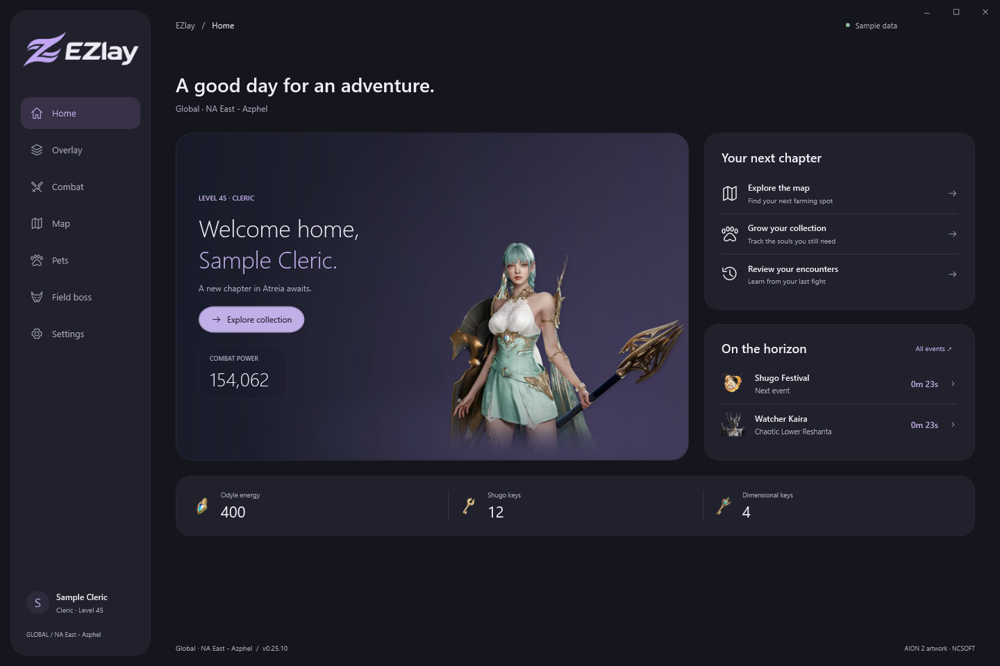
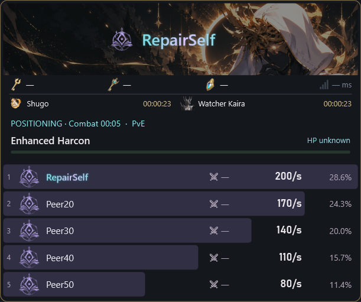

Free to use. Closed source. No EZlay account required.
● ● ●EZlay / Your companionWindows

Your tools, together. Your game, in focus.
A LITTLE HELP, RIGHT WHERE YOU NEED IT
Built around the way you play.
Check a fight. Find your next farm. Keep the information you need close, and the rest out of the way.
COMBAT, AT A GLANCE
A clearer view of every encounter.
Party damage bars and per-player skill breakdowns help you see where damage came from. Open the details beside your meter, then revisit saved encounters in the app.

Actual app interface · sample encounter data
MAKE IT YOURS
Useful overlays. A lighter touch.
Arrange your layout, adjust size and transparency, choose idle artwork and lock overlays in place. The live map has its own lock, so your combat layout stays where you left it.
Look closer without leaving your encounter history.
FROM INSTALL TO IN-GAME
A simple start.
01
Install EZlay
Download the approved Windows installer when available. Your preferences and encounter history live separately from the app files.
02
Check capture requirements
Combat capture uses Npcap’s official installer ↗. Npcap is installed separately. EZlay checks for it on first launch, links to the official download and lets you recheck without restarting.
03
Set your layout and play
Choose your overlays, adjust their position and lock them. Future stable updates can be downloaded and installed when you exit.
ONE APP. ONE STABLE CHANNEL.
Ready for your next session.
Stable downloads, Windows warnings and validation notes are available on GitHub.
Windows x64 · free to use · closed-source application · administrator access required
Self-signed release: Windows may show SmartScreen or Unknown publisher warnings. Do not install a root certificate. Live-game, clean-install and installed-upgrade checks are pending; see the release notes.
EZlay is free to use. Its application source code remains private. The public GitHub repository hosts this website, release information and issue reports. Third-party components retain their own licenses.
How will updates work?
Only approved stable patches are published. The installed app can check and download updates, then apply a downloaded patch when you choose to exit. A persistent update notice opens Settings > Updates; Windows tray notifications also announce available patches. There is no public beta update channel.
Are all map markers live?
No. The atlas includes documented locations. Cube alerts require a recent game signal and use verified character movement for guidance; static map locations never trigger a cube alert. Direction is north-up, not camera-relative.
Where are settings and history stored?
They are stored on your PC, outside the versioned installation directory. Diagnostic files should be reviewed before you attach them to a public issue.
Is this an official AION 2 app?
No. EZlay is an independent fan-made companion and is not affiliated with or endorsed by NCSOFT. AION 2 and game artwork belong to their respective owners. Third-party tool use remains subject to the game’s current rules.